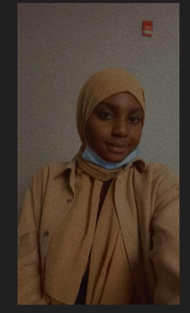

Sofiat Okanlawon

Summary
I am an aspiring Data Scientist and Web Developer. I am proficient in Java, and I'm currently learning web development.
Education
- Bachelor of Science in Computer Science - Valdosta State University, 2024
- Minors: Applied Statistics, Mathematics
- Certificate: Basic Certificate in Data Science
Work Experience
Valdosta State University Information Technology, Valdosta, GA
Student Technician, Jan., 2023 - Present
- Imaged and configured multiple computers for deployment using various software tools.
- Installed and configured software on PCs to ensure smooth operation of computer systems.
- Surplussed different systems and equipment, including managing inventory and ensuring equipment was
properly disposed of.
- Created and resolved tickets to address technical issues, providing prompt and effective solutions to
customers.
- Communicated effectively with customers to understand and resolve technical issues.
Housing Emergency Action Response Team Valdosta, GA
Student Assistant, Oct., 2021 – Jan., 2023
- Provided support to supervisors and managers by performing various tasks as assigned.
- Collaborated with coworkers to provide effective solutions for residents’ issues.
- Provided exceptional customer service to residents experiencing lockouts and other housing-related issues.
Emory Summer Internship, Network Services Atlanta, GA
College Intern, June, 2022 – August, 2022
- Created and managed service tickets to address issues related to routers, switches, and network outages.
- Maintained documentation on service tickets and technical resolutions, ensuring that all data was up-to-date
and accurate.
Skills
- Data Structures and Algorithm
- Programming Languages
- Github
- Microsoft Office
- HTML/CSS
- MySQL
Awards
International Student Scholarship, Dean’s List | Honors: The National Society of Collegiate
Scholars (NSCS)
Other affiliations:
Campus Activity Board (Volunteer), Alpha Lambda Delta (Honors club)